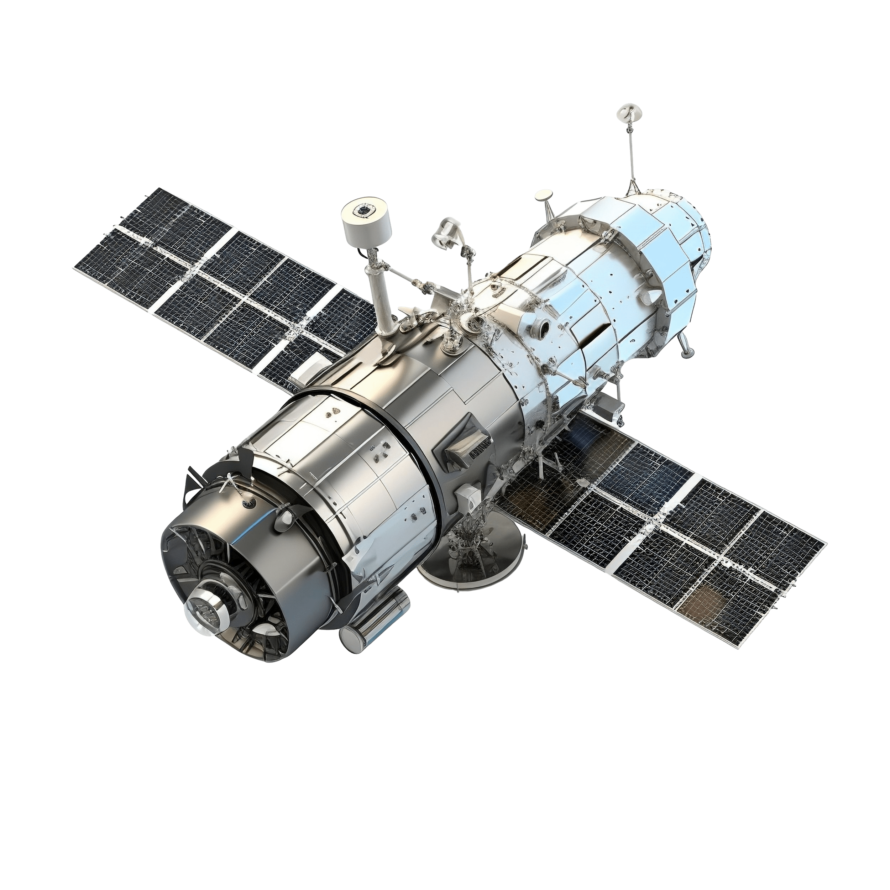
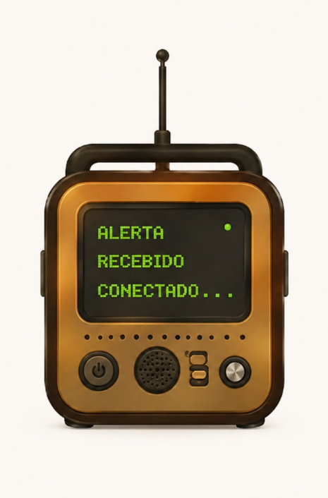

Terra Conectada
Uma solução tecnológica baseada em dados de satélites para monitoramento climático e envio de alertas em tempo real para comunidades rurais.
Uma solução tecnológica baseada em dados de satélites para monitoramento climático e envio de alertas em tempo real para comunidades rurais.

Conectando tecnologia espacial à segurança das comunidades.
O sistema recebe informações meteorológicas coletadas por satélites em tempo real.
Identificação de tempestades, enchentes, ventos fortes e outros riscos.
Alertas enviados antes que os eventos climáticos atinjam a população.
Fluxo completo de funcionamento do Terra Conectada.

O rádio inteligente foi desenvolvido para receber alertas climáticos em tempo real e transmitir as informações de forma simples e acessível.
Visão ampla do planeta para identificação de riscos.

Mais segurança para áreas afastadas dos grandes centros urbanos.
Alertas antecipados ajudam a reduzir danos e salvar vidas.
Interface simples e comunicação por rádio.